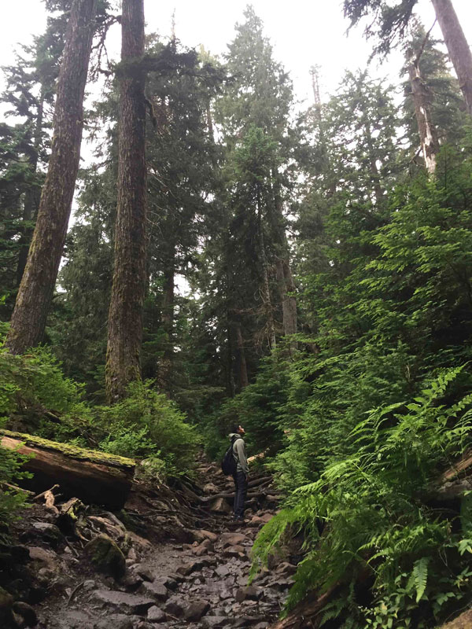
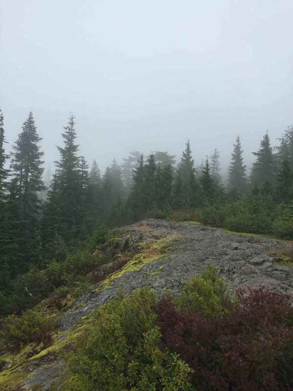
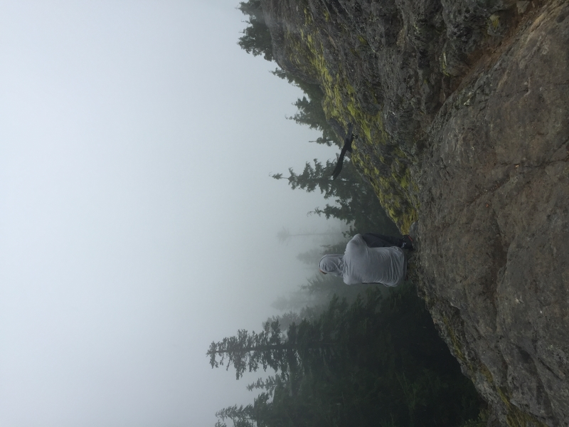
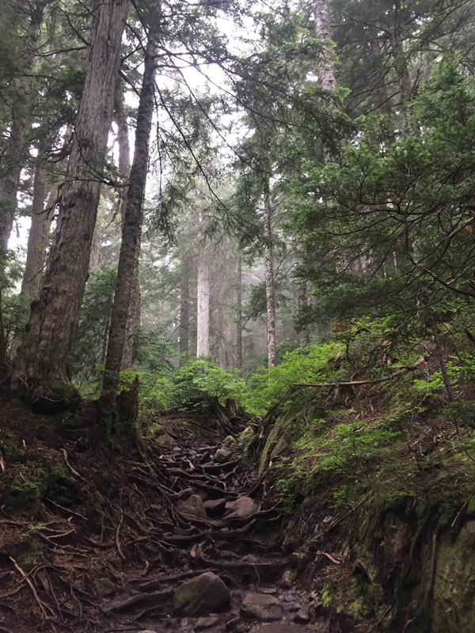
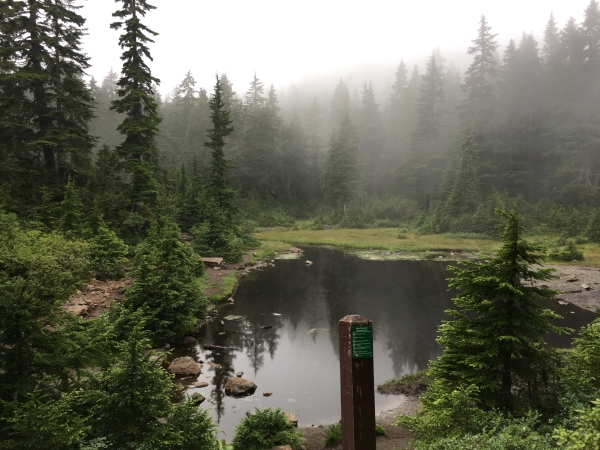
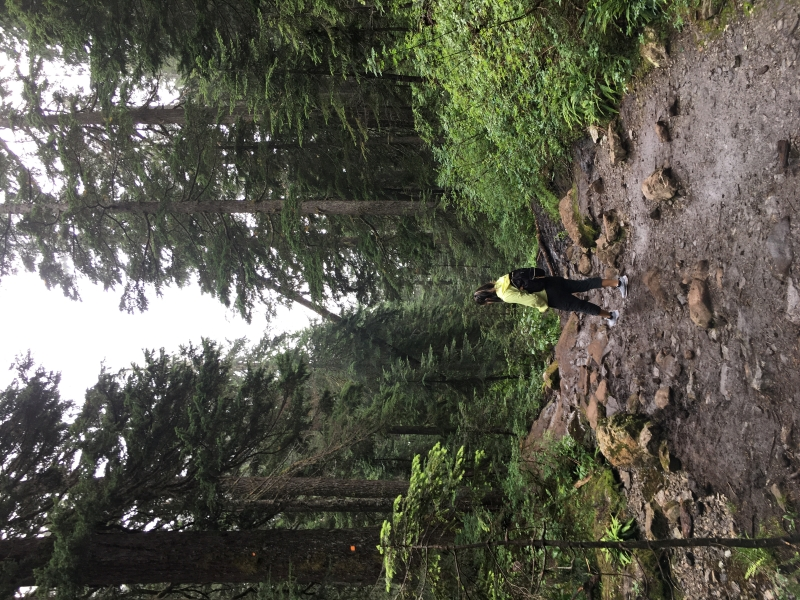
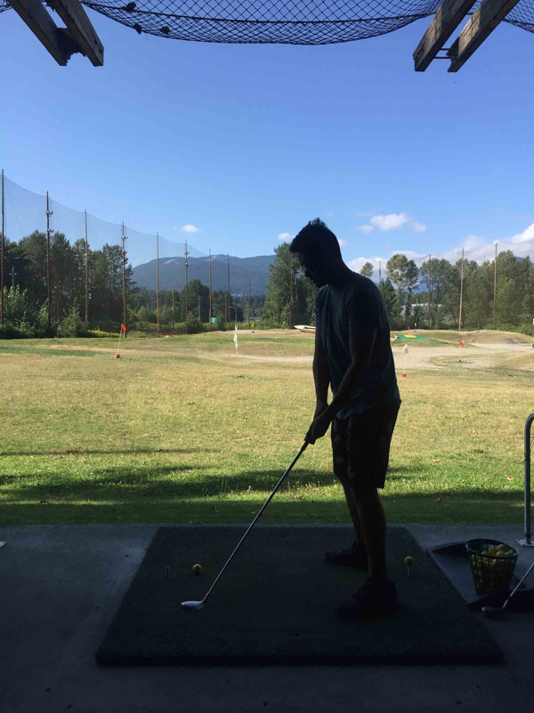

Day 1 of our trip: Here are some photos that we took along the Stawamus Chief Trail. This was a challenging hike for us with an elevation gain of 630 meters at Peak 3. It took us 4 and a half hours to complete and we were dying on our way up and crying on our way down!
Day 3 of our trip: Hike at Mount Seymour. Had to book a pass online due to covid restrictions. This was a fun hike for amateurs like us. It was a nice hour long hike on a gloomy yet peaceful day.
     Day 4 at Seymour Creek Golf Centre: we self taught ourselves how to swing a golf club with a YouTube video. The view was pretty neat.
